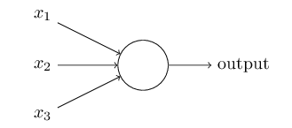
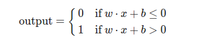
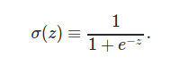
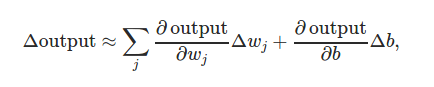
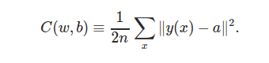
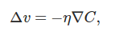
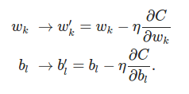

This blog series will be series of notes about neural networks. Let’s get started with first section about Perceptrons, Sigmoid neurons, gradient descent and neural network architecture.
Handwritten Digit Recognition is one of the classic problem of machine learning. It is easy for humans but too complicated for a computer model. But, Neural Networks are a good tool to perform this task with good accuracy.
Perceptrons - It is proven that any logical functions can be derived using NAND gates, in the similar manner, Perceptrons are the universal blocks of any computation models. Perceptrons, sometimes also called activation functions or the neurons which takes several binary units as input and produces single binary output.
In perceptron, all input variables may not be significant to give an output, Hence a weight is assigned to each of them. These weights express the importance of each input with respect to output. Also, a threshold is chosen indicating about the output of perceptron.
The output of a perceptron can be given as weighted sum of inputs. The output equals 1 if the weighted sum of inputs is greater than a threshold value, 0 if it is lesser than a threshold value. Representing the threshold as negative value of a bias term, gives us the following equation about the perceptron function.
This gives an idea that there are two basic parameters of a perceptron function - weight and bias. Weight signifies importance of each input, while bias signifies how easy or difficult it becomes for model to give output value 1 or 0. Higher values of bias will always gives value 1, Lower values of bias will always gives value 0. These values are tuned using learning algorithms such as Stochastic Gradient Descent.
Sigmoid Neurons - Since perceptrons accept and produce only binary values. Making small delta changes in inputs will not affect network’s output. Sigmoid Neurons are introduced due to the intuition that a delta change in weights and bias creates delta change in the output. This is also the basic idea about Learning - make numerous delta changes in input parameters to make delta changes in output, keep decreasing cost function by delta changes, until cost function is minimized.
Sigmoid neurons takes input between 0 and 1, gives output between 0 and 1. In case of sigmoid neurons, activation function is f(w⋅x+b) : sigmoid function. Sigmoid neurons are derived using sigmoid function:
Neural Network Architecture

In the network shown above, there are three layers - input layer, hidden layer and output layer. The idea of the network is input to one layer is the output of previous layer, this type of Neural Networks are called Feed Forward Neural Networks. Design of hidden layers is’nt straightforward but follows heuristic design patterns.
Gradient Descent - In MNIST training dataset, there are (x, y) elements, x represents a 784 row vector (28 * 28 ie 784 gray scale image) and y is a ten row vector indicating output. A feed forward neural network is created with this dataset. In order to train the model, we will use Stochastic Gradient Descent to get values of weights and bias parameters. Using Sigmoid Function, we make delta change in input, this creates delta change in output.
We also define the cost function, also called MSE - Mean Squared Error

This function is always non negative and it measures the current error in hypothesis function. Basically, we need to find the weights and bias that will make this cost function minimum. If the function C(v) is dependent upon input parameters v = [v1, v2]. To compute gradient descent, start taking small steps in direction of v1 and v2 until you reach the minimum.
Change in CF is the derivative of CF function with respect to its parameters
A new parameter is chosen “eta” also called learning rate parameter. If change in CF is delta C, then change in parameters is

To make learning process faster, Stochastic gradient descent chooses small mini batches of training inputs.
Neural Network in Action
Though the full code and data implementation is provided at the end, here is a breakdown of how to implement neural network in python.
# Initialize weights, bias, layers and units
def __init__(self, sizes):
self.num_layers = len(sizes)
self.sizes = sizes
self.biases = [np.random.randn(y, 1) for y in sizes[1:]]
self.weights = [np.random.randn(y, x) for x, y in zip(sizes[:-1], sizes[1:])]
# Given the input, calculates output of the network
def feedforward(self, a):
for b, w in zip(self.biases, self.weights):
a = sigmoid(np.dot(w, a)+b)
return a
# Learning Algo: Gradient Descent
def SGD(self, training_data, epochs, batch_size, eta,test_data=None):
for j in xrange(epochs):
random.shuffle(training_data)
mini_batches = [training_data[ k: k + batch_size ] for k in xrange(0, n, batch_size)]
for mini_batch in mini_batches:
self.update_mini_batch(mini_batch, eta)
# Update Mini Batch, Tune the weights, Decrease Cost Function
def update_mini_batch(self, mini_batch, eta):
nabla_b = [ np.zeros( b.shape ) for b in self.biases ]
nabla_w = [ np.zeros( w.shape ) for w in self.weights ]
for x, y in mini_batch:
delta_nabla_b, delta_nabla_w = self.backprop(x, y)
nabla_b = [ nb+dnb for nb, dnb in zip(nabla_b, delta_nabla_b)]
nabla_w = [ nw+dnw for nw, dnw in zip(nabla_w, delta_nabla_w)]
self.weights = [ w-(eta/len(mini_batch))*nw for w, nw in zip(self.weights, nabla_w)]
self.biases = [ b-(eta/len(mini_batch))*nb for b, nb in zip(self.biases, nabla_b)]
# function to calculate sigmoid
def sigmoid(z):
return 1.0/(1.0+np.exp(-z))
Here is the link or complete code and data Stay Tuned, More notes coming.
comments powered by Disqus